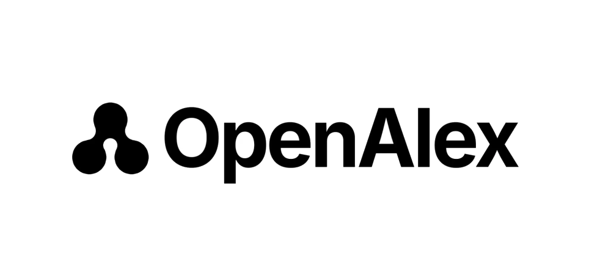
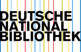

Crossref Membership
Panorama Scholarly Group is a Crossref member publisher. All accepted articles receive a DOI registered in the Crossref metadata database.
Indexing & Archiving
Journals in the Panorama Scholarly Group portfolio are indexed in major scholarly discovery databases, preserved in distributed archiving networks, and registered with international identifier systems.
Digital Object Identifiers
Panorama Scholarly Group is a Crossref member publisher. All accepted articles receive a DOI registered in the Crossref metadata database.
The platform DOI prefix is 10.63802. Individual journal DOIs follow the format 10.63802/[journal-id].[volume].[issue].[article-id].
All DOIs resolve to the article landing page at journals.panorama-sg.com via the DOI Foundation resolver at doi.org.
Article metadata including title, authors, abstract, and references is deposited with Crossref at the time of publication for downstream discovery and citation.
DOIs enable persistent citation of the published version of record. Authors and institutions citing Panorama Scholarly Group articles should use the assigned DOI rather than the direct URL to ensure long-term link integrity.
Discovery Databases
 Google Scholar
Article-level indexing via Google's scholarly search engine.
Google Scholar
Article-level indexing via Google's scholarly search engine.

OpenAlex Open catalog of global scholarly metadata and citation networks. Crossref
Official DOI registration and metadata for all published articles.
Crossref
Official DOI registration and metadata for all published articles.
Preservation & Archiving
 CLOCKSS
Controlled LOCKSS network providing dark archive preservation for journals in the event of publisher discontinuation.
CLOCKSS
Controlled LOCKSS network providing dark archive preservation for journals in the event of publisher discontinuation.
 PKP Preservation Network
A LOCKSS-based preservation network operated by the Public Knowledge Project, designed specifically for journals on the editorial platform.
PKP Preservation Network
A LOCKSS-based preservation network operated by the Public Knowledge Project, designed specifically for journals on the editorial platform.
Panorama Scholarly Group journals participate in the CLOCKSS, LOCKSS, and PKP Preservation Network archiving programs. In the event of publisher discontinuation or content unavailability, archived content will be released by the CLOCKSS network to ensure continued access.
Authors depositing preprints or accepted manuscripts in Zenodo or institutional repositories should follow the version and citation guidance in the Open Access Policy to preserve the integrity of the version of record.
Registration & Identifiers
 ISSN
International Standard Serial Number registered with the ISSN International Centre for each qualifying journal title.
ISSN
International Standard Serial Number registered with the ISSN International Centre for each qualifying journal title.

Deutsche Nationalbibliothek German national bibliography providing metadata registration for open access publications.Journals with registered ISSNs have been verified by the ISSN International Centre. Journals with pending ISSN status are in the registration process. Authors requiring ISSN confirmation should check the individual journal page or contact the publisher directly.
Related Resources